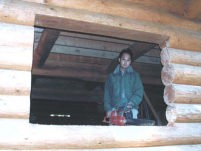
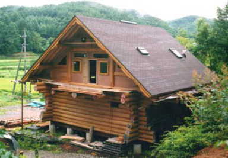
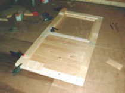
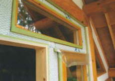
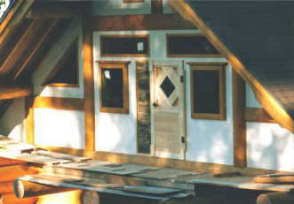
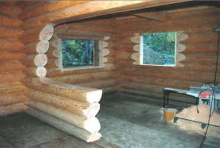
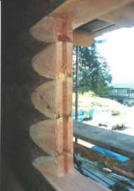
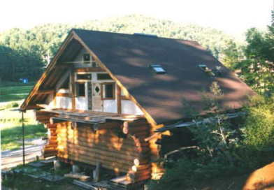

１９９９． ７月 〜 ９月
１９９９． ７月 〜 ９月 |
 |
妻壁をふさぎ、窓をはめ込んでいく
外装の仕上げは漆喰にしたかったが、施工が難しそうなので
一見漆喰に似ているレナラックと言う塗材で仕上げた
１階の窓の入る開口を、チェーンソーで一気に切り落としていくと
とたんに中が明るくなる。
|  | ２階ベランダに出るところの扉  |
| 下地合板の上に、防水紙を貼り 壁材が付きやすいようにラス網をタッカーでとめていく  |
 レナラックと言う塗材で仕上げたところ |
|  １階開口部は、チェーンソーで切り落として開ける 丸太のセトリングのため、建具をスライドさせるキーウェイを刻む（右） |
 | ||
|  |